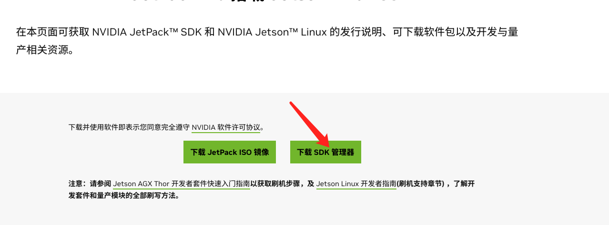
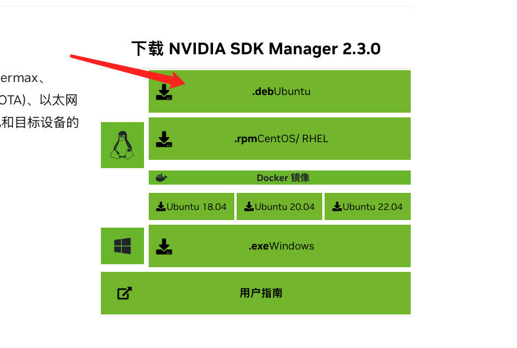
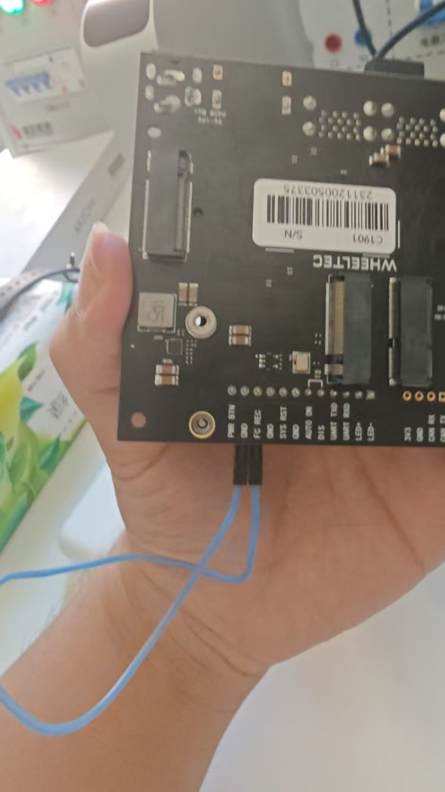

<!DOCTYPE html>
<html lang="zh-CN">

</html>
<head> <title>这是一个我自己在机器人学习的时候搭建的网站</title>
    <style>
        h1{
            text-align: center;
            color: darkturquoise;
        }
        h2{
            text-align:left;
            color:aqua;

        }
        code{
            color :chartreuse;
        }
        body{
            /*选择合适的大小自适应页面 */
            /*这是 css 的注释方法*/
            max-width: fit-content;
            max-height: fit-content;
        }
        warning{
            color:yellow;
        }
        to_solve_warning{
            color:green;
        }
    </style>
</head>
<body>
<p>
<h1>一.开发环境的搭建</h1>
<h2>1️⃣首先先把使用 u 盘对我们的电脑进行刷机</h2>
    我们可以在网上找一个刷机的教程这一步是我们老师给我们做好的<br>
    我们刷机可以参考这个网址<a href="https://www.bilibili.com/video/BV1gBcVeEEam/?spm_id_from=333.337.search-card.all.click&vd_source=9a2b4ebc685840f31b3927d891daaaae">刷机视频</a>
    <br>
    我们这次的目标是刷机到ubantu22.04LST
    <h2>2️⃣给我们的Jetson从机装系统</h2>
    我们需要一台Linux系统的主机,这里我使用的是ubantu22.04LST<br>
    <a href="https://developer.nvidia.cn/embedded/jetpack">首先进入Jetson官网 </a><br>
    下面按照我点的使用图片进行操作
    <h3>首先点击这个</h3>
    
    <h3>然后点击这个</h3>
    
    <h3>最后点击这个</h3>
    
    <br>
    如果第一次是用我们需要新建一个Nvidia的账户
    <br>
    我们首先需要一个 Jetson 的账号<br>
    1.需要一个邮箱📮<br>
    这里我使用的是谷歌邮箱
    <br>
    按照上面的要求一步一步来就好了
    <br>下面我们需要安装这个版本
    <br>我这里安装的是官网的最新版
    <br>在终端上运行
    <h3>先切换到下载目录下</h3>
    <code>cd download</code>
    <h3>在运行这条指令(注意第一次可能回失败)</h3>
    <code>sudo dpkg -i sdkmanager_2.3.0-12626_amd64.deb</code>
    <h3>如果第一次失败运行这条指令</h3>
    <code>sudo apt \--fix-broken install</code>
    <h3>再运行一下上面那条指令</h3>
    <code>sudo dpkg -i sdkmanager_2.3.0-12626_amd64.de</code>
    <br>
    运行sdkmanager<br>
    如果启动成功就证明我们安装上了
    <br>
    下面我们需要将我们的显卡装到restart模式
    <br>
    需要一个跳线把FC REC和GND进行连接起来了
    <br>
    如下图所示<br>
    
    <br>
    然后我们在终端里输入<br>
    <code>sdkmanager</code>
    <br>进入后显示如下<br>
    
    配置如下
    
    因为我的接线图如下
    
    我全选了全部工具,因为我使用的预留的空间足够大<br> 
    下面就进行漫长的等待<br>
    因为下载和安装要好久
   <br> 出现问题的话我们先跳过skip,然后我们发现我们的安装的 apt 包和 snap 包都不可以使用
   <br> 然后将 Jetson 和我们的另一个显示器进行连接
   <h3>我们要安装以下服务</h3>
   <h4>1.安装 jtop 服务</h4>
   <h5>一.更新系统包</h5>
   <code>sudo apt update<br>
    sudo apt upgrade
   </code>
   <h5>二.安装 pip 因为我们是刚刚新的系统没有 pip</h5>
   <code>sudo apt install python pip3</code>
   <h5>三.安装 jetson-stats</h5>
   <code>sudo pip3 install jetson-stats</code>
  <br> 他给我们报了一个 warning<br> 
   <warning>WARNING: Running pip as the 'root' user can result in broken permissions and con flicting behaviour with the system package manager. Itis recommended to use av irtual environment instead: https://pip.pypa.io/warnings/venv</warning>
   <br>
   <to_solve_warning>大概意思就是我们使用管理员权限,可能会导致我们权限损坏建议我们使用虚拟环境
    <br>那我们使用下面的命令
   </to_solve_warning>
   <br>
   <code>pip3 install jetson-stats</code>
   <br>
   然后输入 jtop检测是不是安装上
   <br>
   如果出现下面的页面就是安装成功
   
   接下来安装 Jetpack
   


    


 


    
</p>


</body>